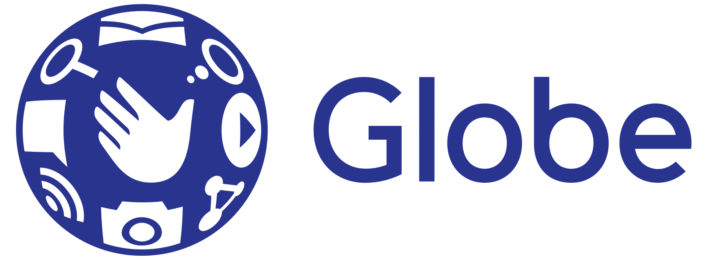

Turning Struggling Digital Transformations Into AI Success
Telleqt helps companies turn failed transformation efforts into practical AI-driven results, focused on cost savings, automation, and measurable operational impact
Our Team Has Helped




Why Telleqt
Outcomes, not tools
We stay focused on measurable business impact, not tool selection or vendor hype. Before recommending any AI solution we start by finding where value is lost.
Personalized
No generic wrappers. We build bespoke architectures tailored to your unique operational constraints and proprietary data silos.
Implementation First
We value working code over slide decks. Our approach starts with integrating into your existing pipelines from day one.
Focused on Cost Savings
AI is an efficiency engine, not a luxury. We measure success by the tangible reduction in operational overhead and the scaling of human intelligence through automated systems.
Diagnosis and Implementation in Parallel
Traditional consultants spend months and years analyzing. We operate on a two-track model where system diagnosis and core infrastructure deployment happen simultaneously.
Diagnosis
We analyze data sources and workflows, identify low-hanging opportunities, and prioritize AI implementation by KPIs to maximize business value and cost savings.
Data Consolidation
We consolidate data sources and improve data quality, reducing manual entry, duplicates, and noise to build stronger foundation for best outcomes.
Infrastructure Staging
Setting up enterprise-grade AI foundations while the strategy is finalized.
Continuous Scaling
Iterative deployment of AI modules with real-time performance tracking.

Uptime
99.99%